제 1 장 서론
1.1 연구배경 및 목적
코로나 19 이후 집에서 머무르는 시간이 길어지고, 휴식과 건강에 대한 소비자의관심이 높아지면서 안마의자에 대한 수요도 증가하고 있다. 국내 안마의자 시장규모는 2007 년에 200 억 정도에 불과했으나 2020 년에는 1 조원까지 급성장하였다. 외관상의자 형태로 만들어져 있고, 내부에 각종 모터, 센서 등이 결합되어 전자∙기계식으로사용되는 ‘안마의자’는 사용자의 근육을 이완하고 근골격계의 스트레칭 효과를제공하는 헬스케어 도구로서 인간이 손으로 하는 안마를 대체하는 역할을 하고 있다.
우리나라에 이러한 안마의자가 처음 등장한 시점에 대한 공식적인 기록을 찾기는어려우나 과거 언론기사 등을 토대로 유추해볼 때, 1990 년대 즈음으로 추정된다.
전자와 기계 기능이 결합된 현대적 의미의 안마의자는 1954 년에 일본에서 처음만들어졌는데, 국민소득의 증가와 함께 건강관리에 대한 소비자의 관심이 증가하면서자연스럽게 일본 제품이 수입된 것으로 보인다. 2000 년대 초반까지만 해도 국내안마의자 시장은 오랜 제조 역사를 가지고 있던 이나다훼미리, 후지의료기, 파나소닉등 일본 기업이 장악하고 있었으며, 제품 특성상 고가의 전자기기로서 소수의 소비자만사용할 수 있는 일종의 사치품목에 가까웠다.
하지만, 2000 년대 중반 이후, 바디프랜드, 휴테크산업, 복정제형 등 한국기업이시장 유망성을 보고, 국내 안마의자 시장에 진출하면서 일본기업이 주도하는 시장에변화가 발생하였다. 특히, 이 중 바디프랜드는 설립 10 년만인 2017 년에 일본기업을따돌리고 글로벌 시장 1 위(Frost&Sullivan 조사, 바디프랜드 8.1%, 파나소닉 7.7%, 이나다훼미리 7.2%)에 올라 시장의 선도자가 되었다. 이러한 바디프랜드의 성장과정에서 안마의자의 기능을 헬스케어의 영역으로 확대했다는 점에 주목할 필요가있다. 과거에는 안마의자가 진동 자극으로 단순히 안마만 제공하는 기기였으나최근에는 체성분 분석, 근골격계 질환 치료 등 건강관리, 질병의 완화를 수행하는고도화된 헬스케어 기기로 진화하고 있다. 바디프랜드는 타 경쟁사와 비교했을 때, AI, 바이오 등 다양한 기술을 활용한 기술융합을 통해 헬스케어 기능을 강화하는 방향으로제품 차별화를 주도적으로 추진하였고, 이 과정에서 다양한 기술혁신 사례가 나타난점은 연구의 필요성을 더욱 높인다.
본 연구의 프로세스는 소비재로서 경쟁이 치열한 안마의자 시장에서 바디프랜드가타 경쟁사와 비교할 때, 어떠한 제품 차별화가 있었으며, 어떤 기술 전략을선택하였는지를 살펴본 후, 안마의자 시장이 형성되던 초기 단계에서 어떤 전략을 통해안마의자의 캐즘을 극복하고, 시장점유율을 확대했는지를 확인하는 방식으로전개되며, 기업의 기술전략과 경영전략을 아우르는 연구를 진행하였다.
제 2 장 연구대상 소개
2.1 안마의자의 정의 및 기원
안마의자에 대해 학술적으로 공식 통용되는 정의는 없으나 현재 사용되는안마의자의 형태와 특성을 고려하여, 다음과 같이 정의할 수 있다. “걸터앉을 수 있는의자 구조 위에서 센서를 통해 사람의 신체를 측정한 후, 목, 어깨, 등과 허리, 팔과 손, 엉덩이, 허벅지, 종아리, 발과 발바닥에 이르기까지 사용자의 전신을 주무르거나, 누르거나, 두드리거나, 잡아당기거나, 문지르거나 하는 등의 방식으로 마사지를 하는동시에 사용자의 착석 각도가 조절되는 전동의자”(네이버 쇼핑사전) 다시 말하면, 의자형태에 사용자가 착석하여 전신을 대상으로 인간의 손을 대체하여 마사지를 제공받는것을 목적으로 사용되는 기기라고 볼 수 있다.
현대적인 전자∙기계식 안마의자는 일본 후지의료기의 창업자 후지모토 노부오가 1954 년도에 최초로 제작한 것으로 알려져 있다. 후지모토는 버려진 목재나 야구공, 자전거 체인 등을 구해 조립하면서 의자 형태의 안마기를 만들었는데 의자 아래 쪽에는핸들형 손잡이, 등받이 쪽에는 마사지볼이 장착된 형태였다. 손잡이를 돌리면마사지볼이 위아래로 움직이면서 이용자가 마사지를 받게 되는 매우 기초적인 수준의안마의자 형태였다.
후지의료기의 ‘안마의자 제 1 호기’는안마의자의 시초로서 그 상징성과 역사적 의의를인정받아 2014 년 일본기계학회에서 ‘기계유산’ 으로 지정되었고, 이는 일본이 안마의자의종주국임을 다시 한번 확인하는 계기가 되었다.
<그림 1> 세계 최초 안마의자
(출처 : 후지의료기)
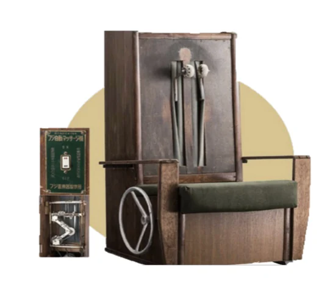
2.2 안마의자의 제품 특성
안마의자의 기능을 수행하는 핵심적인 구성은 크게 마사지볼, 프레임, 에어셀, 리클라이닝 등으로 구분할 수 있다.
① 마사지볼 : 사용자의 체형을 인식하고 거기에 맞춰 구동모터의 회전으로 롤러 형태의 ‘마사지볼’이 상하좌우가 움직이면서 상체 후면을 두드림, 주무름, 지압 등의 효과를제공하게 된다. 마사지볼이 상하로만 움직이는 2D 방식과 상하이동은 물론전후이동까지 가능한 3D 방식으로 구분된다.
② 프레임 : 마사지볼이 구동모터에 의해 움직이지만 일종의 레일 형태의 ‘프레임’이있기 때문에 인체의 굴곡에 맞춰 동작하는 것이 가능해진다. 프레임은 후면부에
장착되어 말 그대로 안마의자의 틀과 형태를 형성하는 역할을 하기도 한다. 초기에는 ‘일자 프레임’ 형태로 곧게 뻗어 등과 척추 위주의 동작이 가능했다면, ‘S 프레임’을 통해목, 어깨 등 돌출된 부분도 커버하는 것이 가능해졌고, 최근에는 ‘S 프레임’과 ‘L 프레임’ 이 결합되어 사람이 의자에 앉은 상태의 라인과 척추라인을 모두 마사지할 수 있는형태도 생겨났다.
③ 에어셀 : 에어펌프에 의해 움직이는 ‘에어셀’은 공기압 마사지가 가능하도록 설계된것으로 프레임이 지나가는 이외의 부위들을 대상으로 공기로 마사지 부위를 눌러주고압박하여 몸의 순환을 원활하게 하고 근육을 이완시켜주는 기능을 제공한다.
④ 리클라이닝 : 등이나 다리 부위의 각도를 조절하는 것으로 사용자의 신체적 특성에맞게 편한 자세로 안마를 받을 수 있게 하는 것은 물론 중력을 최대한 덜 받는 ‘무중력포지션’을 경험할 수 있게 하는 역할을 한다.
<그림 2> 안마의자의 핵심기능 구성(출처 : 바디프랜드)
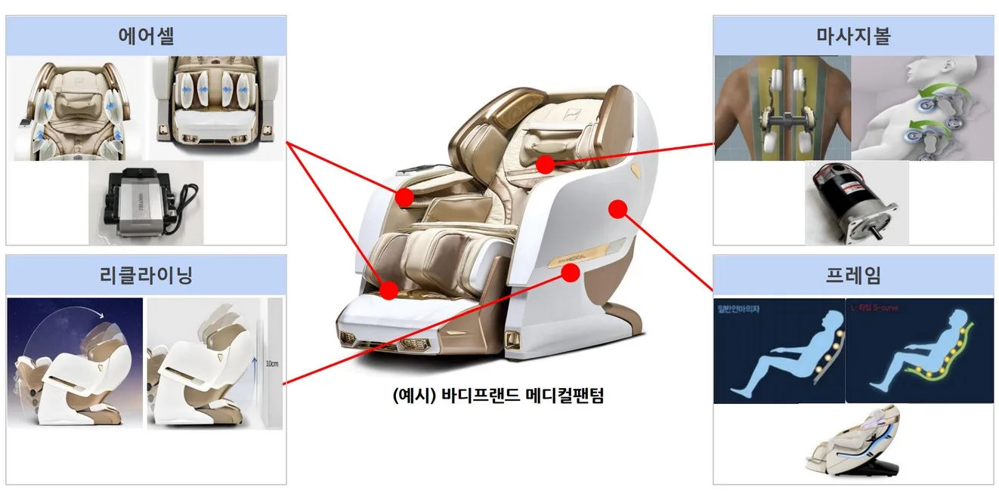
안마의자의 제조공정을 살펴보면, 안마의자의 제품 특성을 좀 더 쉽게 이해할 수있다. 먼저 안마의자의 전체적인 골격을 구성하는 프레임과 기타 부속품을 조립하고, 프레임의 레일에 맞추어 신체에 자극을 주는 핵심 부품인 마사지볼을 장착한다. 이후, 안마의자의 작동 및 제어를 담당하는 마더보드 등을 의자 하단부에 연결, 설치한 후의자의 가죽 시트 등 구성품을 설치하여 의자형태를 갖추게 된다. 이렇듯 메인보드를중심으로 안마의 기능을 수행하는 모터, 에어펌프 등 다양한 부품이 결합되어 있고, 공정 특성상, 생산 자동화가 어려워서 현재는 수작업을 병행하여 대부분의 공정이진행되고 있다.
<그림 3> 안마의자의 제조공정(출처 : Orest)
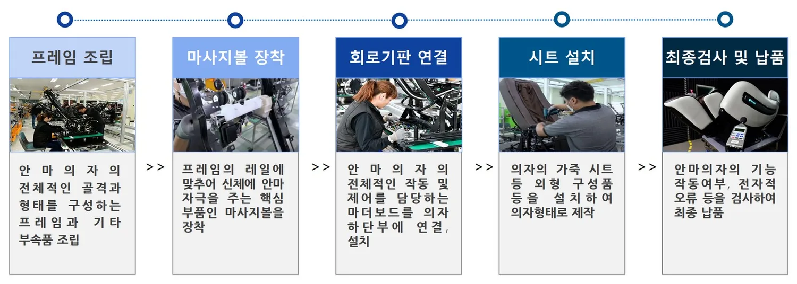
<그림 4> 안마의자의 작동원리(작동계통도)(출처 : 바디프랜드)
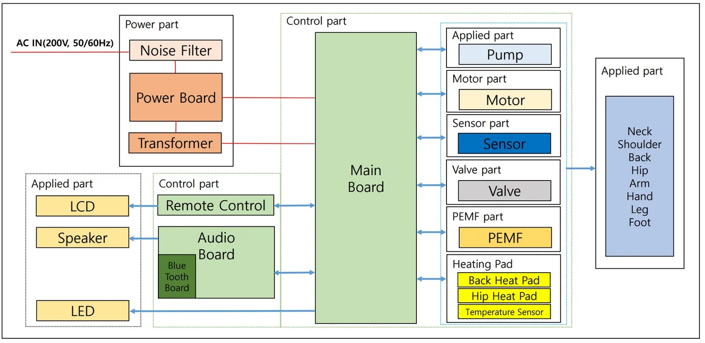
고령화 사회의 진입으로 중장년층의 안마 수요가 증가한 것은 물론 청년층을중심으로 스트레스 증가, 근골격계 질환 만성화 등으로 안마의자에 대한 관심이증가하고 있는 추세이다. 안마의자는 근육을 이완시키고, 근골격계의 통증을완화시키는데 도움이 되고, 마사지볼과 에어셀을 통해 온몸에 자극을 주면서 체내혈액순환을 촉진하는 역할을 하게 된다. 또한, 몸을 물리적으로 주무르거나 누르고, 두드리는 방식으로 몸에 자극을 주면 스트레스의 해소, 숙면 유도 등의 부가적인효과를 가져올 수 있다. 이렇듯 안마의자는 단순히 안마만 제공하는 것이 아니라건강관리, 질병의 예방과 완화를 위한 기능을 수행함으로써 고도화된 헬스케어 기기로발전 가능성이 높은 특성을 가지고 있다.
주로 진동 자극을 통해 안마를 제공하는 품목은 안마 부위에 따라 국소 안마기와 전신안마기로 크게 구분될 수 있다. 국소 안마기는 눈, 손, 발∙다리, 목∙어깨 등 특정 부위에대해서만 안마를 제공하는 기기로서 크기가 비교적 작아 휴대가 가능한 특성이 있다.
전신 안마기로는 안마의자가 대표적이며, 앉아 있는 상태에서 목, 어깨부터 발, 발바닥에 이르기까지 전신에 자극을 주어 안마를 제공한다. 안마의자와 흔히 비교되는
온열침대의 경우, 누워 있는 상태에서 신체의 후면부에 온열도자가 자극을 주면서 척추, 디스크 등 부위의 질환을 주로 치료하는 의료기기로서 주로 활용되며, 침대와 의자의형태가 다른 것처럼 제품의 외형이 안마의자와는 큰 차이가 있다. 최근에는 유사한기능을 가진 안마의자(바디프랜드)와 온열침대(세라젬) 간의 시장경쟁이 더욱치열해지면서 안마의자와 온열침대의 기능을 결합하여 180 도 눕혀지는 것이 가능한 ‘마사지체어베드’ 에덴(바디프랜드)이 출시되는 등 제품의 경계가 허무는 시도도나타나게 되었다.
<그림 5> 안마기의 분류(출처 : 바디프랜드, 세라젬, 네이버쇼핑)
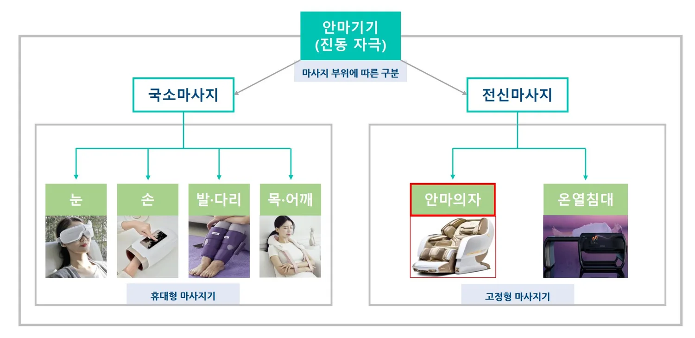
2.3 안마의자 시장 분석
현대인들에게 필요한 헬스케어 기능을 가지고있는 안마의자의 시장규모는 코로나 19 를 계기로급성장하여 2007 년에 200 억원에 불과했으나 2020 년에는 1 조원까지 성장한 것으로 추산되고있다. 2000 년대까지는 안마의자의 종주국인일본기업이 사실상 국내시장을 선도하고 있었고, 고가의 일본제품을 대체하는 저가 중국산안마의자가 시장 일부를 차지하는 구조였다.
<그림 6> 안마의자 시장규모
(출처 : 머니투데이)
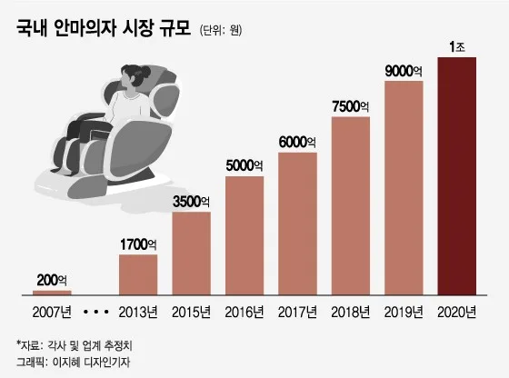
<그림 8> 글로벌 안마의자 순위
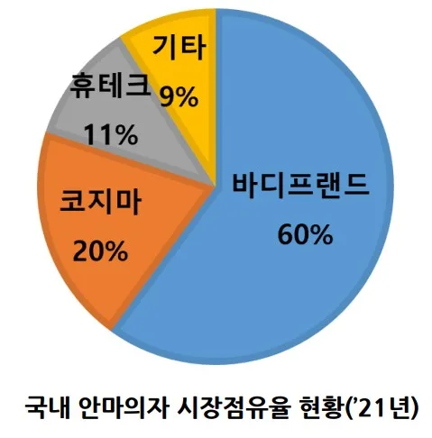
<그림 7> 국내 안마의자 시장점유율
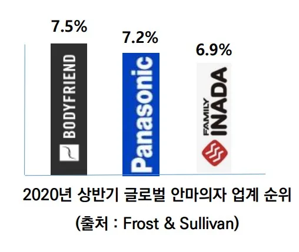
(2020 년 상반기)(출처 :
현황(2021 년)(출처 : 업계추산)
Frost&Sullivan)
바디프랜드가 설립된 2007 년 전후 ‘맛사지용 기기’(HS CODE 9019.10.2000) 수입 통계실적을 살펴보면, 2006 년 일본으로부터의 수입은 702 만불, 2007 년은 869 만불, 2008 년에는 767 만불 규모였으며, 중국의 경우, 2006 년 1,825 만불, 1,940 만불, 2008 년에는 2,145 만불을 기록했다. 무역 통계 상의 ‘맛사지용 기기’에안마의자는 물론 마사지볼, 마사지롤러, 휴대용 안마기 등 수동식 마사지 기구가포함된 점을 감안하면 사실상 일본(고가)과 중국(저가)의 안마의자가 시장에서 큰비중을 차지하고 있음을 보여주고 있다.
국내기업의 경우, 일본에서 최초의 안마의자가 탄생한 지 50 여 년이 지난 2000 년대중반 이후, 2007 년에 바디프랜드와 휴테크산업이 설립되었고, 2010 년 복정제형이코지마 안마의자를 개발하는 등 후발주자로서 뒤늦게 안마의자 시장에 뛰어들게되었다. 이후 국내 안마의자 브랜드는 시장 점유율을 점차 확대하여, 2021 년 기준바디프랜드가 60%, 복정제형이 20%, 휴테크가 11% 가량 차지하여 시장의 90%
이상을 국내 기업이 차지하고 있다. 기존에 시장을 선점하고 있던 일본 안마의자는시장점유율이 10% 미만으로 축소되었다. 글로벌 시장(Frost&Sullivan 조사)에서도 2020 년 상반기 매출액 기준 바디프랜드는 7.5%의 점유율로 1 위에 올랐다.(2 위파나소닉(7.2%), 3 위 이나다훼미리(6.9%)) 2021 년말에는 산업통상자원부가주관하는 ‘세계일류상품 및 생산기업’(세계시장 점유율 5 위 이내 및 5% 이상, 세계시장 규모 연간 5 천만 달러 이상)에 선정되어 바디프랜드의 안마의자가 세계 Top- Tier 수준에 진입하였음을 증명하게 되었다.
안마의자 시장은 다른 소비재와 다른 몇 가지 특성을 가지고 있다. 한방의술의물리적 요법 중 하나로서 안마가 활용되었다는 점을 고려할 때, 신체의 기혈(경락)을지압 등을 통해 자극하여 신경계, 근육계 등의 치료하는 문화가 익숙한 중국, 일본 등동아시아를 중심으로 안마문화가 발달하였고, 자연스럽게 안마의자 또한 해당 지역을위주로 보급되었다. 안마의자 보급률은 일본이 23%, 대만과 홍콩, 싱가포르 등이 13%
안팎, 한국은 10~15% 내외 수준으로 알려져 있으며, 미국은 1% 미만에 불과하여서구권을 중심으로 시장 잠재력이 큰 특징이 있다. 또한, 크고 무거운 안마의자의 제품특성상, 한 가정에 여러 개를 설치하여 사용하기 어렵기 때문에 시장점유율을 높이기위해 치열한 광고 마케팅 활동이 이루어지고 있다. 실제로 안마의자 업체의 매출액대비 광고선전비 비중은 높은 편인데 2022 년 기준 바디프랜드는 6.9%, 휴테크산업은 10.7%, 복정제형은 6.5%를 차지하였다. 참고로 같은 기간 삼성전자의 해당 수치는 2.0%에 불과하였다. 이는 안마의자 기업이 다른 업종에 비해 연구개발, 시설투자 등다른 분야에 자금을 투입하기가 용이하지 않음을 의미한다.
안마의자는 모터, 마사지볼, 프레임 등 다양한 부품이 결합되어 의자 형태로이용되는 제품의 특성상 무게가 육중하고, 제품이 차지하는 공간이 크며 높은 가격대를형성하고 있다. 바디프랜드의 ‘더파라오 S’의 경우, 최대 크기(안마의자를 최대한넓혀서 사용하는 경우)가 200(길이)×85(폭)×99(높이)이며, 무게는 145kg 에달하며 구매시 가격이 680 만원 정도이다. 이는 가정에서 사용하는 양문형 냉장고와비교했을 때, 크기와 무게(179(높이)×91(폭)×92(길이), 135kg)가 비슷한 수준(LG 전자 오브제컬렉션 4 도어)인데 구매가격(180 만원)은 3 배 이상 차이가 난다.
<그림 9> 안마의자와 냉장고 비교(출처 : 바디프랜드, LG 전자)
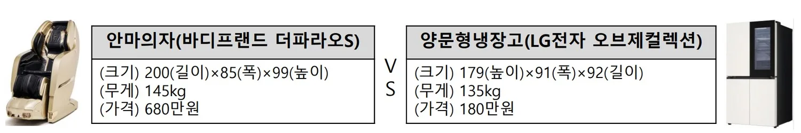
2.4 바디프랜드 기업 소개
컴퓨터 제조업체를 운영하다가 실패를 경험한 컴퓨터 공학자 출신의 창업자가우연히 안마의자의 성장 가능성을 발견한 것이 바디프랜드의 창업 계기가 되었다.
2007 년 창업 당시, 고가의 일본제품과 저가의 중국제품이 양분되어 있는 시장 상황을고려하여 바디프랜드는 R&D 를 바탕으로 우수한 기능의 제품을 개발하면서, 소비자의가격부담을 낮추는 전략을 활용하면서 점차 시장점유를 확대하게 되었다. 그 결과, 2022 년 말 기준 매출액 5,220 억원, 영업이익 241 억원, 종업원수 1,485 명 규모의중견기업으로 성장하였다.
<표 1> 바디프랜드 기업 개요
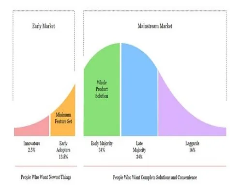
업체명 ㈜바디프랜드 대표자 지성규, 김흥석
본점 소재지 서울특별시 강남구 설립일 2007.03 안마의자, 매트리스, 정수기 등
주요제품 자산총액(’22) 4,387 억원제조/판매/렌탈
종업원수 1,485 명 매출액(’22) 5,220 억원
(’22.12)
특허출원 435 건(소멸, 무효 제외)
연구개발실적 영업이익(’22) 241 억원연구개발실적 24 건(‘19~’22)
융합 R&D 센터(‘11 년 설립)
융합 디자인 R&D 센터(‘13 년 경상연구개발비
연구개발조직 249 억원설립) (’22)
메디컬 R&D 센터(‘16 년 설립)
- 렌탈 방식의 안마의자 판매 전략 최초 도입(‘10 년)
특징 - 일본 이나다훼미리와 특허 분쟁 경험(‘17 년 최종 승소)
- 국내 경쟁사에 비해 경상연구개발비가 높은 수준(‘22 년 매출액 대비 4.8%)
제 3 장 이론적 배경
3.1 기술융합
기술융합에 대한 학술적 연구는 Rosenberg(1963)가 영국의 공작기계 기술혁신역사를 분석하는 과정에서 시작되었다. 터닝, 밀링 등 금속가공 기술을 응용한 방식이무기, 섬유, 자전거 공장 등에서 공통적으로 나타났고, 이처럼 다양한 산업의 공장들이이들 기술 문제들을 해결해 나가는 과정에서 드러난 공동 기술혁신 현상을 ‘기술수렴’(Technological convergence)이라고 정의하였다. 이후 일본의 Kodama(1991) 는 기계기술과 전자기술의 융합으로부터 생성된 메카트로닉스(mechatronics)
제품으로부터 ‘기술융합’(Technology fusion)이라는 용어를 사용하였으며, 기술혁신을 기존 기술의 돌파(Breakthrough)와 여러 기술의 돌파가 동시에일어나면서 융합(Fusion)하는 것 등 두 가지 형태로 구분하였다.
Roco&Bainbridge(2002)는 기술융합을 ‘IT, BT, NT 의 첨단 신기술 간 접목을 통해그동안 넘지 못했던 과학기술적 한계를 극복함으로써 경제와 사회에 혁명적 변화를가져오는 기술’로 정의하고, 기술융합은 공통의 목표를 해결하기 위해 성질이 다른기술들 간의 화학적 결합을 뜻하는 다학제적 연구 분야라고 제시하였다. 바디프랜드는단순히 안마만 제공하는 안마의자의 한계를 뛰어넘어 BT, AI, 로봇공학 등 다양한분야의 기술을 결합하여 헬스케어 기능을 강화하는 방식으로 ‘기술융합’ 중심의기술전략을 통해 제품 차별화를 추진하였다.
3.2 캐즘(Chasm)
Rogers(1962)는 혁신의 확산 및 수용에 관한 연구를 통해 혁신적인 제품이소비자의 성향에 따라 정규분포 형태를 보이며 수용된다는 ‘기술수용주기론’(Technology Adoption Life Cycle)을 주장하였다. 혁신적인 제품의 수용자를혁신성을 바탕으로 구분하고, 이들의 특징을 분석, 반영하여 사업전략을 수립하여야시장에 안착할 수 있다고 보았다. 그는 수용자를 혁신자(Innovators), 초기 수용자 (Early adopters), 전기 다수 수용자(Early majority), 후기 다수 수용자(Late majority), 지각 수용자(Laggards)로 구분하였다. 정규분포의 형태에 따라 혁신자는 2.5%, 초기 수용자는 13.5%, 전기 다수 수용자는 34%, 후기 다수 수용자는 34%, 지각 수용자가 16%를 차지한다. 이후 Moore(1991, 2002)는 하이테크 제품의사업화는 일반 기술의 사업화 혹은 마케팅과 다르다는 점을 강조하며 초기시장( 혁신자와 초기 수용자)과 주류시장(전기 다수 수용자, 후기 다수 수용자) 사이에 제품수요가 감소하는 일종의 침체기인 캐즘(Chasm)이 존재한다는 사실을 발표하였다.
캐즘은 초기 수용자와 전기 다수 수용자 간의 하이테크 제품 구매에 대한 동기가 다르기때문에 발생한다. 초기 수용자는 기술의 잠재력을 파악하고, 제품을 조기에 사용하여변화의 선도자가 되고자 하는 성향이 강한 반면, 전기 다수 수용자는 실용주의적사고를 바탕으로 이미 입증이 되어 문제가 없는 제품을 기대하는 성향이 있다.
바디프랜드는 안마의자 시장이 형성되던 초기 단계에서 소비자의 가격 부담을 낮추고, 디자인 혁신과 기술개발을 통해 안마의자의 Whole product(완전완비제품)를구현하였으며, 고객경험을 제공하는 유통채널을 구축함으로써 캐즘을 극복할 수있었다.
<그림 10> 기술수용주기 모델(출처 : Medium)
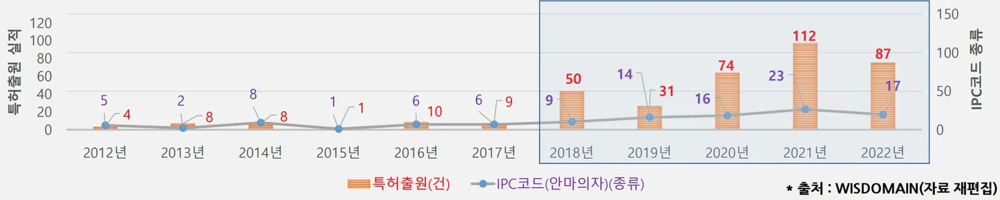
3.3 렌탈 비즈니스
렌탈 비즈니스(Rental Business)는 경제학자 제러미 리프킨의 저서 ‘소유의 종말’(The age of access)에서 소유 대신 경험 추구의 시대가 도래하였고, 이에 가장최적화된 소비 형태가 ‘렌탈’임을 언급하면서 주목 받기 시작했다. Durgee et al.
(1995)는 렌탈을 ‘다른 한쪽에게 계약기간 동안 화폐의 거래를 통해 제품을제공하지만 소유권의 변화가 없는 교환 행위’라고 정의하였으며, Wittkowski et al. (2010)는 ‘대여자가 계약기간 동안 제품의 사용에 대한 권리 뿐만 아니라 제품 사용에따른 이익에 대한 권리를 가지는 것’이라고 언급하기도 했다. 변미영(2014)은 렌탈이 ‘소유하는 것보다 사용하는게 중요하다는 ‘신 소비패턴’으로서 제한된 금액 내에서최대의 만족을 얻으려는 소비자의 심리’가 반영된 것이라고 하였다. 렌탈은 ‘소유권의변동없이 일정기간 비용을 받고 기업의 재화를 소비자들에게 빌려주고, 사용 경험을제공하는 서비스의 형태’로 이해될 수 있는데 기술의 발달에 따라 신제품의 출시 주기가단축되고, 제품 가격은 상승하였지만 사용주기는 오히려 짧아지는 상황이 렌탈비즈니스가 활성화되는 배경이 되었다. 국내 렌탈시장 규모(KT 경영경제연구소 조사)
는 2016 년 25.9 조원에서 2020 년에는 40.1 조원까지 급성장하였는데 대상제품이안마의자, 정수기, 공기청정기 등 내구성 생활가전부터 최근에는 향수, 명품가방 등프리미엄 제품으로 확대되는 추세이다. 이러한 제품은 교체주기가 있거나 일정 시점만사용하는 고가 제품이라는 공통점을 가지고 있다. 우리나라에서는 1990 년대 후반에웅진코웨이가 정수기 판매 전략으로서 렌탈 방식을 활용하면서 정수기의 대중화에
기여한 바 있다. 소비자의 입장에서는 렌탈을 통해 고가의 제품을 일정기간 합리적인가격에 사용하면서 소비경험을 획득할 수 있으며, 제품 사용 과정에서 유지보수 관리등 다양한 부가서비스를 제공받을 수 있다. 기업은 렌탈 판매 방식을 활용하기 위해사업 초기에 대규모 비용이 지출되나 이후 안정화되면 할부판매를 통해 일정기간 동안안정적인 수익 창출이 가능해지며, 유지 관리 과정에서 고객의 다양한 취향 정보를수집하고, 만료 이후 재계약을 통한 Lock-in 효과를 도모할 수 있다. 바디프랜드는 고가제품인 안마의자에 대한 소비자의 경제적 부담을 완화하고, 안마의자의 대중화를촉진하기 위해 2010 년에 업계 최초로 렌탈 판매 방식을 도입하였다.
3.4 관련 선행연구
안마의자에 대한 학술적 연구는 의학적 효과나 효용성과 관련된 내용이 주류를이루고 있으며, 기술경영적 측면에서 연구하거나 특허분석을 진행한 사례는 극소수에불과하며, 학술적 의의를 찾기도 어려운 상황이다. 하지만, 특허분석을 통해 기술융합수준을 확인하거나 하이테크 제품의 캐즘 극복 전략에 대한 연구는 다양한 분야에서진행된 바 있다. Caviggioli(2016)은 특허의 IPC 코드를 활용하여 기술융합이발생하는 동인을 분석하고, 특허 데이터에서 나타난 기술 간의 상호 의존성을 통해새로운 융합의 출현을 예측할 수 있음을 제시하였다. 김규환∙김병근(2021)은특허정보를 활용하여 농업부문 기술 간의 융합을 확인하고자 개별 특허에서 공동으로출현하는 특정 IPC 코드 간의 네트워크 구조 및 매개 중심도를 분석하고, 한국표준산업분류코드를 기준으로 각 산업 간 연관도를 확인하였다. Hussain et al.
(2022)은 스마트팩토리 관련 기술에 대한 특허 및 네트워크 분석을 통해 기술융합을평가하고, IPC 코드를 중심으로 기술 간 연계성을 확인하여 어떤 기술이 주로 활용되고있으며 어떤 방향으로 진화되고 있는지를 연구하였다. 캐즘 극복과 관련해서는 서순식∙ 윤한기(2011)는 디지털 교과서를 활용한 수업에 대한 교사들의 낮은 수용성을확인하고, 캐즘을 극복하기 위해서는 제품의 이점을 전파하고, 행정적 지원 및홍보활동 등 인식개선이 필요함을 제언하였다. Ottesen et al.(2023)은 쿠웨이트가산유국이라는 특성 때문에 전기 자동차(EV)의 시장점유가 극히 낮은 상황에 착안하여심층인터뷰와 설문조사를 통해 소비자의 기술 수용 성향을 분석하고, 캐즘을 극복하기위한 전략을 모색하였다.
제 4 장 사례 설명
4.1 기술분석(특허분석)
바디프랜드의 기술력과 기술적 특성을 확인하기 위해 특허분석을 실시하였다.
바디프랜드의 특허출원 실적(소멸, 포기, 거절 등 제외)은 총 435 건(2012~2022 년) 으로 확인되었으며, 금번 분석대상인 안마의자 관련 특허로 한정했을 때, 394 건이분석대상으로 추출되었다. R&D 센터가 처음 설립된 2011 년 이후 2012 년부터 2017 년까지 한 자리수 수준의 특허출원 실적을 보이다가 2018 년부터 크게 증가하여 2021 년에는 최대 출원실적인 112 건으로 나타났다. IPC 코드(International Patent Classification, 국제특허분류)는 발명의 기술분야를 나타내는 국제적으로 통일된특허분류체계로서 특허에 얼마나 다양한 IPC 코드가 부여되어 있는지에 따라 해당특허의 기술 다양성을 파악할 수 있다. 2018 년부터 2022 년 사이에 특허출원 실적이크게 증가한 것은 물론 IPC 코드(서브클래스 기준)의 종류가 적게는 9 종류, 많게는 23 종류까지 증가하였는데, 2015 년부터 2017 년까지 1~6 종류 수준임을 감안하면 큰폭의 증가라는 것을 알 수 있다.
<그림 11> 연도별 특허출원 실적 및 IPC 코드 종류
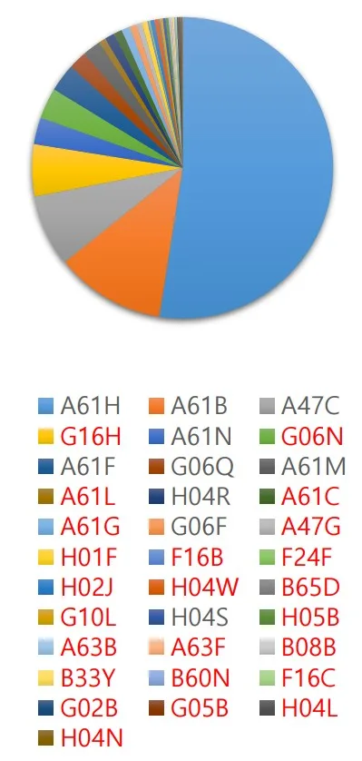
분석대상인 394 건의 특허의 IPC 코드 분포를살펴보면 총 34 종류로 확인되었으며, 해당 IPC 코드가 하나라도 포함된 특허의 수(여러 IPC 코드를사용한 특허의 경우 중복 합산)를 기준으로 최다
출현 5 종류의 IPC 코드는 A16H(52.5%), A61B(11.8%), A47C(7.7%), G16H(5.6%), A61N(2.9%)으로 확인되었다. 해당 IPC 코드는물리적 자극을 주는 안마 기능이나 생체인식, 의자, 헬스케어에 관한 것이 주요한 내용이다. 또한, 생활필수품에 해당되는 “A”코드 외에도 G(물리학), B(처리조작, 운수), H(전기), F(기계공학 등) 등다양한 분야의 기술이 분포되어 있음을 알 수있었다.
<그림 12> IPC 코드
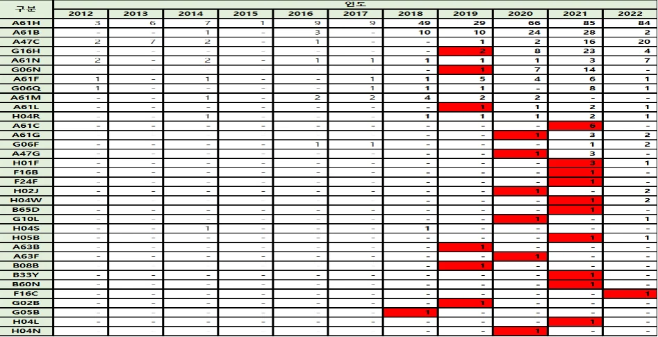
분포현황
(출처 : WISDOMAIN)
<표 2> 주요 IPC 코드 해설내용(출처 : 한국특허기술진흥원)
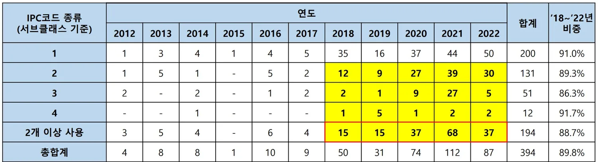
IPC 코드 해설내용물리적인 치료 장치, 예. 인체의 급소의 위치를 검출 또는 자극하는 장치；인공 호
A61H 흡；맛사지；특별한 치료 또는 인체의 특정의 부분을 위한 입욕 장치
A61B 진단; 수술; 개인 식별
A47C 의자헬스케어 인포매틱스, 즉. 의료 또는 건강 관리 데이터의 취급 또는 처리에 특히
G16H 적합한 정보통신 기술[ICT]
A61N 전기치료; 자기치료; 방사선치료; 초음파치료
IPC 코드의 분포를 연도별로 살펴보면 2018 년부터 2022 년 사이에 처음 출현한 IPC 코드가 24 종류(빨간색 음영표시)로 확인된다. 2012 년부터 2022 년까지 전체 IPC 코드가 34 종류임을 감안하면 2018 년부터 특허출원 수의 증가와 함께 다양한기술이 활용된 특허가 증가했다는 것을 의미한다. 그 기간에 처음 출현한 IPC 코드가포함된 특허의 주된 내용은 AI, IT, 바이오, 로봇공학 등에 관한 것으로 안마의자 본연의기능에 부가하여 이러한 기술을 활용하여 헬스케어 기능이 확대되고 있음을 알 수 있다
<표 3> 연도별 IPC 코드 분포현황(출처 : WISDOMAIN 자료 재편집)
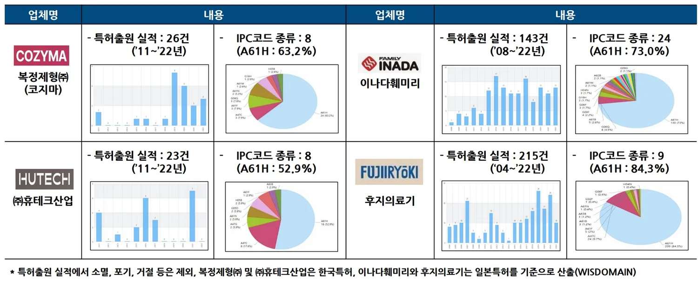
<표 4> 신규 출현 IPC 코드 포함 특허 주요내용(출처 : WISDOMAIN)
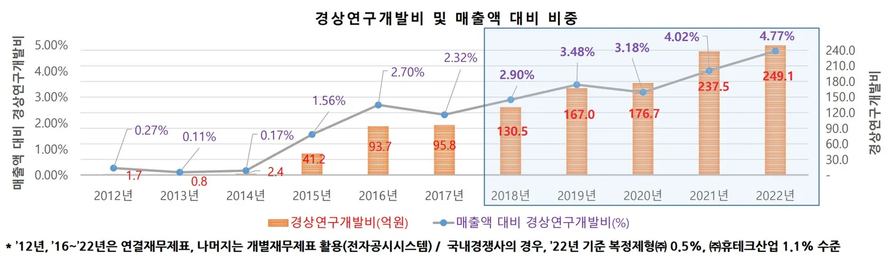
IPC 코드 특허 주요내용
G16H 딥러닝 학습, 심전도 모니터링, 인공지능 관련 시스템 및 장치
G06N 의료데이터 활용 및 건강 진단, 딥러닝을 통한 질환 분류
A61C 독립 거동 다리 마사지 장치
G02B 정신건강 향상 및 인지기능 회복
H04L 혈압 관리 마사지 장치
추가적으로 특허의 IPC 코드를 활용하여 바디프랜드의 특허가 얼마나 서로 다른기술을 융합하여 출원되었는지 확인하였다. 서로 다른 IPC 코드(서브클래스 기준)를 2 개 이상 포함한 특허는 2012 년부터 2017 년까지 한 자리 수 수준에 그쳤으나 2018 년부터 크게 증가하여 2021 년에는 최대 68 건으로 나타났다. 앞서 살펴본 것처럼해당 기간에 활용된 기술 자체가 다양해졌을 뿐만 아니라 그러한 다양한 기술이 서로융합, 응용하는 형태로 발전한 것을 의미한다.
<표 5> 특허당 IPC 코드 종류수별 출원 현황(출처 : WISDOMAIN 자료재편집)
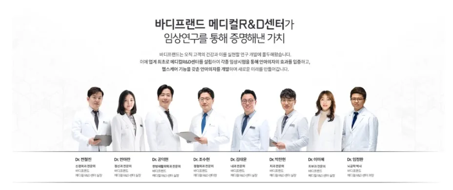
IPC 코드의 다양성이나 특허출원 실적은 타 업체와 비교했을 때, 더욱 명확해지는데국내 경쟁기업인 복정제형이나 휴테크산업은 특허 출원실적(2011~2022 년)이 각 25 건 내외에 불과했으며, IPC 코드 종류도 8 종류에 불과하였다. 일본의 안마의자 업체와비교를 위해 비교업체로 바디프랜드와 특허소송 분쟁이 있었던 이나다훼미리와안마의자의 원조기업인 후지의료기를 선정하였다. 일본특허를 기준으로이나다훼미리는 특허출원 실적(2008~2022 년)이 143 건, IPC 코드 종류는 24 종류, 후지의료기는 특허출원 실적(2004~2022 년)이 215 건, IPC 코드 종류는 9 종류였다. 특이한 점은 일본기업의 경우 IPC 코드 종류 중 마사지기 기능에 관련된 코드인 A61H 에 대한 비중이 70% 이상(이나다훼미리 73.0%, 후지의료기 84.3%)에 달할 정도로높다는 것이다. 이것은 일본기업이 안마의자 본연의 안마 기능에 집중된 연구개발활동을 했다는 점을 의미한다.
<표 6> 타 업체의 특허출원실적 및 IPC 종류 현황(출처 : WISDOMAIN)
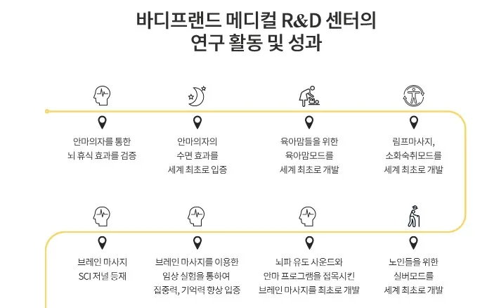
4.2 연구개발 투자 및 조직
재무측면에서 바디프랜드의 연구개발 투자에 대해 살펴보면, 창업 초기인 2014 년까지는 경상연구개발비가 5 억원 미만에 불과했으나 2015 년부터 상승하기시작하여 2018 년에는 처음으로 100 억을 돌파하였으며, 2022 년에는 249 억원까지증가하였다. 매출액 대비 경상연구개발비 비중을 살펴보면 2018 년에 2.90%에서 2022 년에는 4.77%까지 상승하였으며, 이는 집중적인 R&D 투자를 바탕으로 특허의양적 성장과 함께 기술융합을 통한 질적 성장이 이루어졌다는 것을 알 수 있다. 2017 년이나다훼미리와의 특허 소송에서 확정 판결을 받은 이후, 기술력 확보 필요성이확대되었고, 헬스케어 기능을 강화하는 과정에서 R&D 투자가 늘어난 것을 추정된다.
국내 경쟁사의 2022 년 매출액 대비 경상개발비 비중은 복정제형이 0.5%, 휴테크산업이 1.1% 수준에 불과하다는 점을 고려할 때, 바디프랜드는 업계 최고수준의 연구개발 투자를 진행하고 있는 것으로 파악된다.
<그림 13> 연도별 경상연구개발비 및 매출액 대비 비중
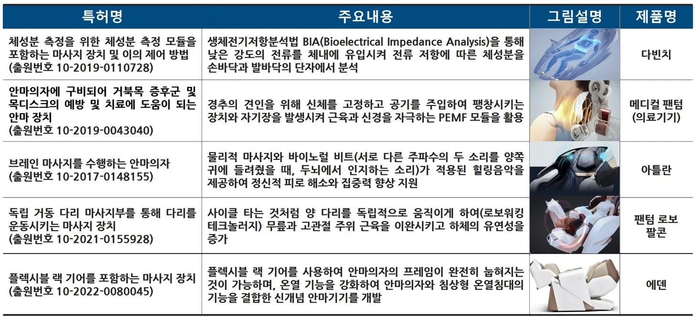
바디프랜드는 재무적인 투자 외에도 연구개발에 대한 특화된 조직을 운영하여 인적투자에 대한 노력도 아끼지 않고 있다. 2011 년에 안마의자의 기능 개선 및 제품 개발을담당하는 융합 R&D 센터 설립을 시작으로, 2013 년에는 인체공학적 제품 디자인을주도하는 디자인 R&D 센터를 운영하고 있으며, 2016 년에는 안마의자의 헬스케어기능을 강화하기 위해 메디컬 R&D 센터를 별도 설치하기도 했다. 이들 3 개 센터에는약 200 명의 연구원이 근무하고 있는 것으로 알려져 있으며, 이는 전체 직원의 약 13%
에 해당된다. 특히, 메디컬 R&D 센터의 경우, 정형외과, 정신과, 신경외과 등 관련전문의는 물론 뇌공학자와 같은 전문가를 영입하여 안마의자의 헬스케어 기능을강화하기 위한 많은 연구가 진행되었으며, 이 과정에서 AI, IT, BT, 로봇공학 등 다양한기술이 융복합되었다. 바디프랜드는 체성분 분석, 디스크 치료 등 헬스케어 기능을구현하고, 사용자 인체 특성을 반영한 안마종류의 세분화가 가능해졌으며, 결과적으로타 경쟁사와 차별화되는 제품을 개발할 수 있게 되었다.
<그림 14> 메디컬 R&D 센터 전문의 <그림 15> 메디컬 R&D 센터 연구성과
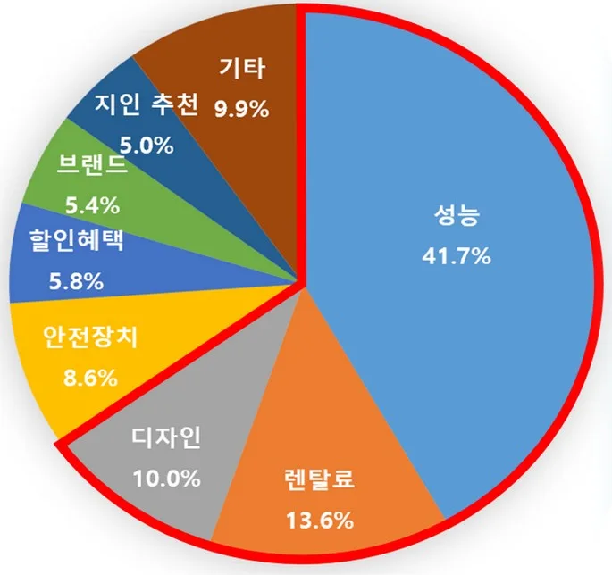
<표 7> 바디프랜드의 차별화된 기술(특허) 및 주요내용
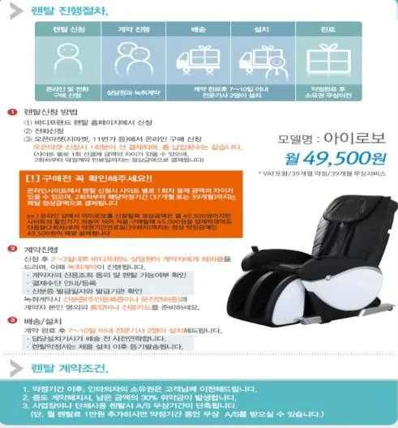
4.3 경영전략의 분석 배경
바디프랜드가 캐즘을 극복하기 위해사용했던 경영전략을 본격적으로 분석하기에앞서 소비자가 안마의자를 선택하는 기준이무엇인지 확인해보았다. 한국소비자원이안마의자 이용 경험자 900 명을 대상으로 한설문조사(2021.12 발표)에서 안마의자를선택할 때, 성능(41.7%), 렌탈료(13.6%), 디자인(10.0%) 순으로 중요시한다는 것으로나타났다.
<그림 16> 안마의자 선택기준
(출처 : 한국소비자원 설문조사)
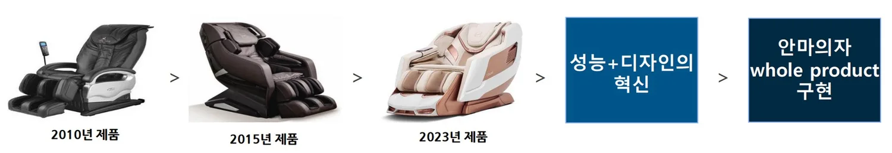
안마의자에서 성능은 안마 기능과 함께 건강관리에 관련된 부가 기능을 포함하고있으며, 디자인은 세련미, 안락함 및 다른 가구와의 조화 등으로 정의되며, 렌탈은소비자의 경제적 부담을 최소화하는 판매 방식으로 이해할 수 있다. 조사 결과를정리하면, 소비자는 “성능이 우수하고, 좋은 디자인을 가지고 있으면서 경제적 부담이적은(렌탈방식) 안마의자”를 원한다는 것을 알 수 있다.
안마의자 시장이 본격적으로 형성되기 전인 2000 년대 초반 상황을 살펴보면, 당시안마의자는 이러한 소비자의 구매기준에 부합하기에는 부족한 면이 많았으며, 주류시장으로 확대되지 못하는 한계가 발생하였다. 당시 안마의자는 대부분 일본수입에 의존하여 판매되었고, 제품에 따라 가격이 300~700 만원까지 분포되어 그당시 소득 수준을 고려하면 매우 높았다. 국내기업이 안마의자 제조에 본격적으로진출하지 않은 상태에서 고가 일본제품이 초기 시장에 유입되어 주류를 형성하다보니소비자의 입장에서 안마의자 구매에 경제적 부담이 매우 큰 상황이었으며, 소비자가쉽게 접근하지 못하는 고가제품의 이미지가 고착화되었다. 또한, 디자인 측면에서도일본 안마의자는 투박한 디자인과 검은색 일변도의 한정된 색상으로 구성되어가정에서 물리적으로 차지하는 크기가 크지만 안마의자의 디자인 기능성은미흡하였다. 아파트 중심의 주거문화와 안마의자가 주로 거실에 설치된다는 점을감안하면 소파, 탁자 등 가구, 가전과의 형태 및 색감 조화를 통한 집안 인테리어를중시하는 한국 소비자의 니즈를 충족하기에는 부족하였다. 추가적으로 안마의자는고가제품이라는 인식 때문에 백화점이라는 한정된 유통채널을 통해 판매되었는데신체에 직접 사용하는 기기임에도 불구하고, 제품을 경험할 수 있는 기회가 부족하였다.
주류시장의 전기 다수 수용자(Early majority)는 실용주의적 성향을 가지고, 초기수용자(Early adopters)의 반응을 살펴보고 제품을 신중하게 선택한다는 특성이있다는 점에서 백화점 중심의 유통채널은 안마의자의 대중화에 한계를 가져올 수 밖에없었다.
4.4 경영전략 분석
Moore 는 저서 “캐즘 마케팅”을 통해 캐즘을 극복하기 위한 9 가지 프레임워크를제시하였는데 바디프랜드는 Whole Product, Sales Channel, Pricing 측면에서디자인 혁신, 체험공간 제공, 렌탈판매 방식 등 혁신적인 경영전략을 활용하여안마의자 시장 자체의 캐즘을 극복하고 시장점유를 확대할 수 있었다.
<표 8> 캐즘 극복을 위한 9 가지 프레임워크(출처 : 캐즘 마케팅)
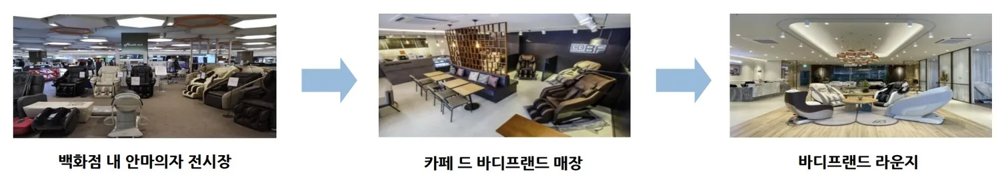
연번 구분 주요내용
1 Target Customer 초기 다수 시장 내 목표 고객을 정의 Compelling Reason to 목표 고객이 새로운 솔루션을 구매할 수 밖에 없는 이유를 분석 Buy
3 Whole Product 목표 고객의 구매이유를 완벽하게 해결할 수 있는 완비제품을 정의 4 Partners and Allies 완비제품 내 부족한 부분을 제휴 또는 협력으로 보강하여 최종 완성 5 Sales Channel 효과적인 유통경로를 조직
6 Pricing 고객과 공급자를 모두 만족시킬 수 있는 가격정책 수립
7 Competition 시장 내 적절한 경쟁제품을 정의
8 Positioning 경쟁제품과 차별화하여 포지셔닝
9 Next Target 인접 시장으로 확장
렌탈 판매 방식에 대해 먼저 살펴보면, 바디프랜드가 시장에 진출할 당시 일본안마의자는 300~700 만원 정도의 가격대에서 판매되었는데 소비자의 입장에서한번에 거액의 돈을 지불하면서 안마의자를 구매하는 것에 경제적 부담이 매우 큰상황이었다. 소비의 진입 장벽이 높다보니 일반 가정에서 쉽게 살 수 없는 품목이라는인식이 강하였다.
바디프랜드는 이러한 문제를 해결하기 위해 2010 년에 렌탈 방식을 업계 최초로 도입하였으며, 매달 일정금액만 지불하면 안마의자를 빌려 쓰도록 하면서 판매를확대하였다. 당시, 전신 안마에 대한 요금이 5 만원가량인 것에 착안하여 렌탈료 49,500 원에 39 개월동안 임대하여 사용하는 조건을 제시하였으며, ‘밖에서안마 한번 받는데 들어가는 돈이면 온 가족이 한달간안마의자를 사용할 수 있다’는 홍보가 가능해지게되었다.
<그림 17> 렌탈 홍보물
(출처 : 바디프랜드)
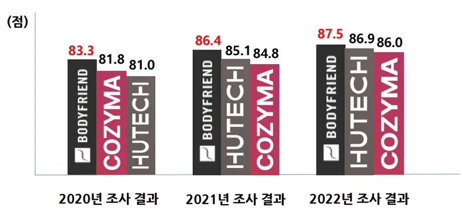
바디프랜드의 1 호 특허(“설치용 제품에 대한 렌탈 서비스 제공 방법, 서버 및 컴퓨터판독 가능한 기록 매체”(2012.09.28. 출원))가 공교롭게도 제품기술과 관련된 것이아닌 렌탈 판매 방식과 관련된 것일만큼 바디프랜드는 렌탈 판매를 전략적으로추진하였다. 일종의 ‘할부’ 개념이 적용된 렌탈의 금융리스 서비스를 통해 소비자는합리적인 비용으로 고가의 제품에 대한 경험을 획득할 수 있게 되었으며, 안마의자의대중화를 촉진하는 계기가 되었다. 바디프랜드 입장에서는 제품을 먼저 제공하고, 장기간 대금을 나누어 회수하는 방식으로 인하여 초기 자금조달에 많은 어려움이있었으나 렌탈 비즈니스 방식이 정착되면서 안정적인 수입원이 창출되는 효과를가져왔다. 바디프랜드의 렌탈 비즈니스 도입은 매출액 확대에도 큰 역할을 하게되었는데 도입 전인 2009 년 매출액이 50 억에 불과했으나 2010 년에는 189 억원, 2011 년에는 341 억원으로 급성장하게 되었다.
안마의자는 사용시간보다 사용하지 않고 놓여 있는 시간이 훨씬 긴 특성이 있으며, 물리적으로 큰 공간을 차지하기 때문에 안마의 기능 자체 뿐만 아니라 외형적 디자인이중요하다. 특히, 가정 내에서 주로 거실에 설치된다는 점을 고려하면, 주변 가전, 가구와의 조화, 세련된 디자인과 색감 등을 부각하여 인테리어 아이템으로 활용될 수있다. 바디프랜드는 초기에는 일본 안마의자의 디자인을 답습하였으나 이러한 부분에주목하여 ‘디자인경영’의 중요성을 인식하고, 2013 년에 디자인 R&D 센터를
설치하였다. 일본 안마의자의 투박한 디자인과 한정된 색상에서 탈피하여 세련되고날렵한 곡선과 함께 다양한 색상을 갖춘 형태로 안마의자를 개선하였다. 또한, 인체공학적 설계를 통해 비행기 일등석의 형태에서 착안하여 안락함, 착석감, 시선보호 등의 기능을 제공하는 디자인을 구현하였고, 디자인 출원실적이 257 건 (2013~2022 년)에 이를 정도로 디자인 수준을 크게 높이게 되었다. 앞서 기술전략부분에서 살펴본 기술융합을 통한 안마의자의 헬스케어 기능 강화와 함께 외형적디자인을 혁신적으로 개선함으로써 바디프랜드의 안마의자는 제품 자체의 기능성과디자인 외적 기능성을 모두 충족하게 되어 소비자에게 Whole Product(완전완비제품)
로 인정받게 되었다.
<
그림 18> 바디프랜드 제품의 디자인 변천(출처 : 바디프랜드)
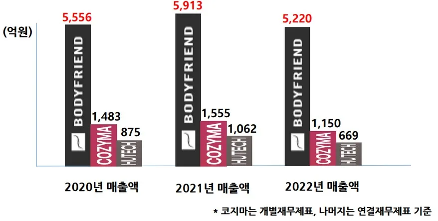
안마의자는 초기 시장형성 당시, 높은 수준의 가격으로 인하여 경제적 여유가 있고새로운 제품을 적극적으로 수용하는 초기 수용자(Early adopters)의 전유물이라는인식이 강하였다. 주류 시장에 진입하기 위해서는 사용경험을 널리 제공하여 전기 다수수용자(Early majority)의 거부감을 제거하는 것이 중요하였다. 하지만, 안마의자의가격이 고가라는 이유로 2000 년대 초반까지 안마의자의 주요판매망은 백화점이중심이었으며, 백화점이라는 공간 특성상 다른 매장과 함께 전시장이 입점되어 있어접근성이 떨어지고 안마의자 사용경험을 폭넓게 제공하지 못하는 한계가 발생하였다.
바디프랜드는 2014 년에 커피 프렌차이즈와 제휴하여 카페형태의 안마의자 경험공간 ‘카페 드 바디프랜드’를 개점하고, 카페에서 음료를 즐기며 안락하게 안마의자를경험할 수 있도록 하여 거부감을 제거하고, 소비자의 저변을 확대하는 전략을추진하였다. 편안한 분위기에서 제품을 체험하면서 자연스럽게 관심과 구매를유도하는 방식을 통해 시장점유를 확대할 수 있었다. 이와 별도로 전국 직영 전시장을 ‘바디프랜드 라운지’라는 이름으로 변경하고, 제품의 배치와 조명, 음악 등 고객경험과관련된 주변환경을 최적화하여 이미지 제고와 안마의자의 캐즘 극복에 기여하고, 주류시장으로 안마의자가 대중화되는데 긍정적인 역할을 하게 되었다.
<그림 19> 바디프랜드 안마의자의 판매망 변화(출처 : 바디프랜드)
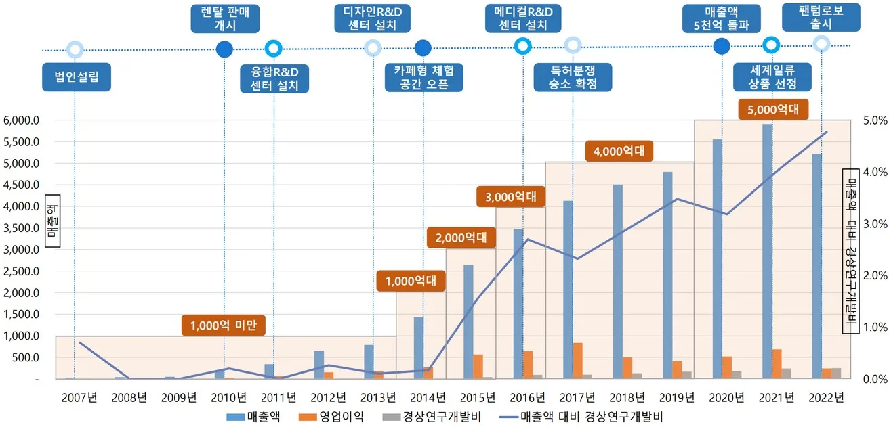
4.5 기술전략과 경영전략의 의의
바디프랜드가 기술융합을 통해 헬스케어 기능을 강화하여 제품 차별화를 추진하고, 안마의자 시장 자체의 캐즘을 극복하여 시장점유를 확대하는 전략이 어떤 성과를가져왔는지를 살펴보기 위해 최근 매출액 추이와 고객만족도 조사( 한국능률협회컨설팅 주관)를 확인해보았다. 매출액의 경우, 최근 3 년동안 5,000 억원대의 매출액을 유지하며, 국내경쟁사인 복정제형과 휴테크산업에 비해 월등하게 높은수준을 보이고 있다. 2 위인 복정제형과도 3 배 이상 차이가 나는 것으로 나타나시장점유율이 높은 수준임을 알 수 있었다. 또한, 바디프랜드는 2020 년부터 2022 년까지 3 년 연속 안마의자 분야 고객만족도 1 위를 차지하였는데 안마 성능, 매장시설/ 환경, 제품 디자인 및 색상, 기능 다양성 등의 세부 항목에서 경쟁사 대비 좋은 평가를받았다.(“바디프랜드는 전반적 만족도와 재구입의향 모두 경쟁사 대비 높은 우위를기록했으며, 요소만족도는 안마 성능, 조작 편리성, 매장 시설/환경, A/S, 제품 디자인및 색상, 기능 다양성, 안정성, 제조회사 신뢰도의 세부 항목에서 경쟁사 대비 좋은평가를 받았다.”(2022 년 고객만족도 조사결과 보고서 중))
결국 기술전략과 경영전략 분석을 통해 확인한 ‘기술융합 기반의 안마의자의헬스케어 기능 강화’(안마 성능, 기능 다양성), ‘고객체험을 제공하는 유통채널’(매장시설/환경), ‘디자인 혁신’(제품 디자인 및 색상) 등의 요소가 고객의 만족도에 긍정적인영향을 미친 것으로 확인되어 바디프랜드의 전략이 유효했음을 알 수 있었다. 또한, 이러한 전략을 바탕으로 바디프랜드는 안마의자 시장의 변화를 주도하고 소비자의니즈를 적극적으로 반영하여 창업 첫해인 2007 년 매출액 27 억원의 중소기업에서불과 15 년만에 매출액 5,000 억원이 넘는 중견기업으로 성장하였다.
<그림 20> 안마의자 고객만족도 조사 <그림 21> 안마의자업체 매출액
(출처 : 한국능률협회컨설팅) (출처 : 각 업체 재무제표)
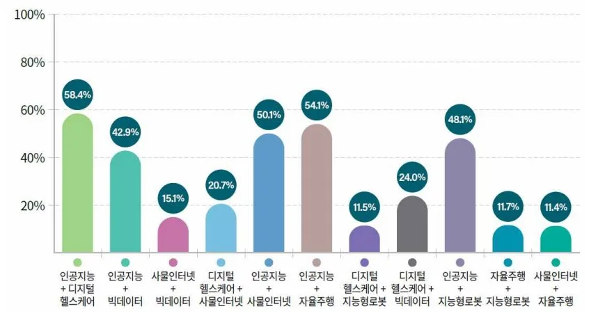
<그림 22> 바디프랜드 매출액, 영업이익, 경상연구개발비 추이(출처 : 재무제표)
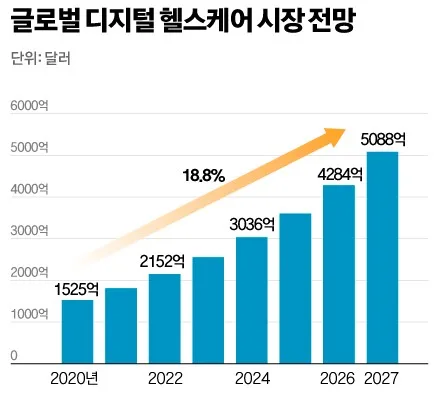
또한, 융복합 분야 특허출원 동향(’22.11 월 특허청 발표)에서 확인된 바와 같이헬스케어 분야와 AI, 로봇, 빅데이터 등 타 기술과의 융복합이 활발히 진행되고 있는점과 글로벌 디지털 헬스케어 시장이 향후 급성장이 예상되는 시장전망을 고려하면, 바디프랜드는 이러한 기술 트렌드와 시장의 변화를 정확하게 읽고, 미래를 준비하고있다는 것을 알 수 있다. 그러한 측면에서 장기적인 성장동력을 확보하고 중견기업규모 이상의 “홈 헬스케어 플랫폼” 기업으로서 향후 미래 발전 가능성이 더욱 기대되고있다.
<그림 23> 융복합분야별 출원 증가율 <그림 24> 글로벌 디지털헬스케어시장
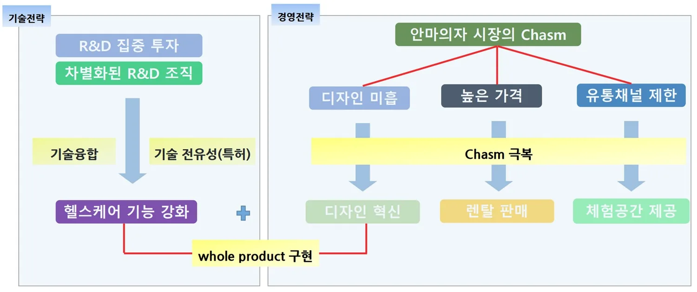
(‘12→’21) (출처 : 특허청) (출처 : GIA)
제 5 장 결론
5.1 바디프랜드의 성공요인
바디프랜드의 성공요인을 정리하면 다음과 같다. 타 경쟁사에 비해 높은 수준의연구개발 투자를 진행하고, 전문의를 영입하는 등 차별화된 연구개발 조직을 운영하는방식으로 기업의 연구개발 기반을 창업 초기부터 강화한 것이 기술력을 확보하는데중요한 역할을 하였다. 이 때문에, 높은 특허출원실적을 보유하게 된 것은 물론 다양한분야의 전문 연구인력이 AI, BT, IT, 로봇공학 등의 기술을 융복합하여 헬스케어 기능에집중하면서 제품성능이 향상되고 기능이 다양해지게 되었다. 이것은 자연스럽게건강관리와 질병예방에 관심이 많은 현대인의 트렌드와 니즈를 충족하는 결과를가져왔다.
하지만, 안마의자의 성능이 아무리 개선되더라도 안마의자 시장 자체가 주류시장에진입하지 못한다면 제품의 성장성을 담보하기는 어렵게 된다. 당시 고가의 일본안마의자가 시장의 대부분을 차지하면서 발생한 디자인 기능성의 부족, 높은 가격에따른 소비자의 부담, 유통채널의 제한은 안마의자를 캐즘에 빠뜨렸고, 안마의자의대중화를 더디게 만드는 요인이 되었다. 바디프랜드는 디자인 혁신을 통해 집안인테리어와 어울리면서 안락함을 제공하는 안마의자를 제작하였고, 렌탈 판매를 업계최초로 도입하여 소비자의 진입장벽을 낮추고 합리적인 비용에 안마의자를 사용할 수있도록 하였다. 또한, 백화점에 제한된 유통채널을 체험기회를 제공하는 방식으로개선하여 거부감을 줄이고, 소비자의 저변을 확대함으로써 캐즘 극복에 기여하게되었다. 결론적으로, 기술융합 중심의 기술전략과 캐즘을 극복하는 경영전략이결합되어 시너지를 창출하고, 경쟁기업과의 차별화 및 시장 선도에 성공하게 된 것이현재의 바디프랜드를 있게 한 원동력이라고 할 수 있다.
<그림 25> 바디프랜드의 전략 정리
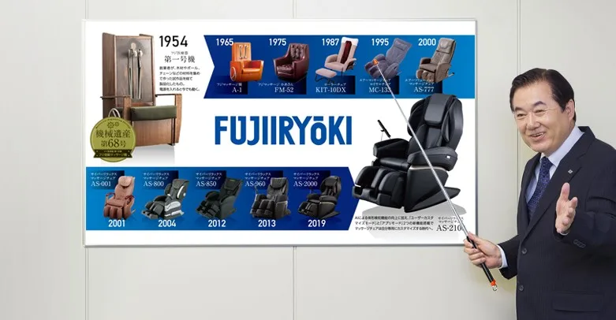
5.2 일본 안마의자의 도태 원인 및 시사점
일본 안마의자 업체는 70 년의 제조역사를 가지고 있었으나 새로운 아이디어에기초한 혁신적 제품 개발 보다는 ‘안마’라는 기능 자체에만 치중하여 기존 연구분야를심화시키는 형태로 연구개발을 진행하여 시장의 기대수준과 괴리가 발생하게 되었다.
앞서 살펴본 특허의 IPC 코드 분포를 통한 기술의 다양성 수준을 비교하는 과정에서일본기업이 국내기업에 비해 마사지기 기능에 관련된 코드인 A61H 에 대한 비중이과도하게 높다는 점(이나다훼미리 73.0%, 후지의료기 84.3%)은 연구개발과정에서다양한 기술이 활용되지 못했다는 것을 의미한다. 안마의자가 헬스케어 기기로 발전할수 있는 가능성을 배제하고, 단지 안마만 수행하는 기능으로 한정하여 제품을 인식하는사고의 한계가 만들어낸 결과라고 할 수 있다. 실제로 일본 안마의자의 제품카달로그나 설명서를 살펴보면 안마방식, 유형, 강도 등은 매우 세분화되어 있으나바디프랜드의 체성분 분석이나 브레인 마사지와 같은 부가적으로 건강을 관리하는헬스케어 기능은 미흡하다는 것을 알 수 있었다.
또한, 일본은 1970 년대에 이미 고령화사회에 진입하였고, 노년층이 안마의자의주요 소비대상으로 자리잡아, 제품에 대한혁신적인 변화를 추구하기가 어려웠다.
소비성향이 보수적인 노년층의 특성을고려할 때, 디자인의 혁신이나 기능의다양화에도 소홀하게 되었다.
<그림 26> 후지의료기 제품변천
(출처 : 후지의료기)
한국의 안마의자 회사에 비해 한국 소비자의 니즈와 트렌드를 즉각적으로 반영하여
제품을 개선하지 못했다. 그리고 일본에서의 판매전략이나 방식을 고수하면서 여전히가격은 고가 수준을 유지하여 한국 시장에서 도태된 것으로 판단된다.
반면에, 바디프랜드는 시장의 후발주자임에도 불구하고, 안마의자 제품이 헬스케어기기로서 성장할 수 있는 가능성을 일찍이 포착하였다. 자금, 인력 등 경영여건이취약한 창업 초기임에도 불구하고 연구개발 투자에 집중하고, 헬스케어 기능 강화에필수적인 전문의 등 핵심인력 영입에 적극적으로 나서기도 했다. 기술융합을 바탕으로안마의자의 헬스케어 기능을 강화하였고, 이를 통해 건강에 관심이 많은 소비자의니즈를 충족시키는데 중요한 역할을 하였으며, 바디프랜드가 단순한 안마의자 기업이아닌 헬스케어 기업으로 전환되는 계기를 마련하게 되었다.
뿐만 아니라 바디프랜드는 안마의자 시장 자체가 주류 시장에 진입하지 못한 한계를정확하게 진단하고, 다수의 소비자가 안마의자를 접할 수 있도록 렌탈 판매방식, 디자인 혁신, 체험공간 제공 등 새로운 전략을 시도하여 안마의자 시장 자체의 저변을넓히고 캐즘을 극복하는데 기여하였다.
이러한 일본기업과 바디프랜드의 사례는 오랜 제조의 역사를 가지고 있는 선도자의지위임에도 불구하고, 기존의 연구개발을 답습하여 변화하는 소비 트렌드를 읽지못하고 제품 혁신을 게을리한다면 언제든 시장에서 퇴출될 수 있으며, 후발주자라도시장의 변화를 정확하게 인식하고, 제품에 대한 새로운 시각과 연구개발을 통해게임체인저로서 시장의 판도를 바꿀 수 있다는 사실을 일깨워준 사례라고 할 수 있다.
5.3 연구의 한계 및 제언
안마의자를 기술경영학의 측면에서 전문적으로 다룬 연구보고서나 선행연구가 매우부족하여 특허분석과 기업의 소개자료, 일부 기사 등 제한된 정보만을 참고하여 연구를수행할 수밖에 없었던 점은 연구의 한계점으로 남아있다. 특히, 안마의자가 기업 간시장 경쟁과 견제가 치열한 소비재라는 특성 때문에 외부인이 관련 기업의 협조를 받아기술이나 마케팅 관련 자료를 확보하는 것은 매우 어려운 일이었다.
안마의자가 일본에서 처음 개발되었고, 다양한 부품이 결합되어 있는 특성을고려하면, 안마의자의 제조공정과 함께 제조사와 부품사 간의 밸류체인에 대한 연구를심화하여 아키텍처 이론의 측면에서 다루면 좀 더 흥미로운 결과를 도출할 수 있을것이라 기대된다. 또한, 바디프랜드가 일본 기업에 비해 50 년 이상 안마의자 시장진출이 늦었지만 기술혁신을 통해 후발주자에서 선도자의 지위로 성장한 점에착안하여 ‘기술추격이론’을 토대로 창업 초기 일본 제품을 답습하는 수준에서 벗어나기술을 습득하고, 자체적으로 제품을 개발하는 과정을 제품의 변천사와 함께 다룬다면의미있는 연구가 될 것이라 생각한다.
코로나 19 이후 성장세를 보이던 안마의자 시장은 2023 년에 바디프랜드를 포함한주요 기업의 매출실적이 하락한 것으로 나타나 전반적으로 위축되는 모습을 보이고있다. 이러한 산업의 위기 속에서 안마의자와 온열침대의 경쟁이 치열해지는 가운데 두기기의 기능을 결합한 ‘마사지체어베드’라는 신개념 제품이 2024 년에 처음 등장( 바디프랜드 ‘에덴’)하였고, 최근에는 1 인 가구를 겨냥하여 기존의 안마의자와는형태가 다르지만 디자인 기능성을 크게 강화한 소형 마사지체어가 시장의 관심을 받고있다. 또한, LG 전자, SK 매직 등 대기업도 안마의자 시장에 진출을 가속화하는 등향후에도 치열한 경쟁이 예상되고 있어 이러한 안마의자 시장의 변화에 주목하여지속적인 연구가 필요할 것으로 예상된다.
마지막으로, 안마의자가 기술융합을 통해 헬스케어 기기로서 확장 가능성이 높은만큼, 바이오, AI, IT 등 다양한 분야의 시각에서 안마의자에 대한 활발한 연구가진행되기를 기대하며, 안마의자를 포함하여 생활 속에 자리잡은 다양한 소비재가기술혁신의 측면에서 어떤 의미가 있는지를 모색하는 연구가 활성화되어 대중들에게기술경영학의 의미를 일깨우는 기회가 지속되기를 희망한다.
Reference
(논문)
- Rosenberg, Nathan. (1963). “Technological Change in the Machine Tool
Industry, 1840-1910”, The Journal of economic history, 23
- Durgee, J. F., & Colarelli O'Connor, G. (1995). An exploration into renting
as consumption behavior. Psychology & Marketing, 12(2), 89-104.
- Moeller, S., & Wittkowski, K. (2010). The burdens of ownership: Reasons
for preferring renting. Managing Service Quality: An International Journal, 20(2), 176-191.
- 서순식, 윤한기. (2011). 캐즘이론과 정보기술수용모형을 적용한 디지털 교과서
수용 연구. 컴퓨터교육학회 논문지, 14(4), 33-41.
- 변미영, (2014) “렌탈서비스 기업의 신뢰향상요인”, 한국 IT 서비스학회 학술대회
논문집 1-4
- Caviggioli, F. (2016). Technology fusion: Identification and analysis of the
drivers of technology convergence using patent data. Technovation, 55, 22-32.
- 김규환, 김병근. (2021). 특허정보를 활용한 농업부문 기술융합 및 기술협력
네트워크 분석. 한국산학기술학회 논문지, 22(7), 518-527.
- Hussain, A., Jeon, J., & Rehman, M. (2022). Technological convergence
assessment of the smart factory using patent data and network analysis. Sustainability, 14(3), 1668.
- Ottesen, A., Banna, S., & Alzougool, B. (2023). How to Cross the Chasm
Electric Vehicle Journal, 14(2), 45.
(도서)
- Rogers, Everett M. (1962). Diffusion of innovations (1st ed.). New York:
Free Press of Glenco
- Kodama, F.(1991). Analyzing Japanese High Technologies: The Techno
Paradigm Shift, London: Printer Publishers
- Moore, G. A., & McKenna, R. (1999). Crossing the chasm, 1991.
HarperBusiness, New York.
- Roco, M. & Bainbridge, W.(2002). Converging Technologies for Improving
Human Performance: Nanotechnology, Biotechnology, Information Technology and Cognitive Science, US National Science Foundation.
- 제프리 무어, (2015). 제프리 무어의 캐즘 마케팅, 세종서적, 서울.
- 제러미 리프킨, (2023). 소유의 종말, 민음사, 서울.
(연구보고서)
- 「일본기업의 실패와 성공의 교훈」, LG 경영연구원, 이지평, ’12.02.22.
- 2017 정보분석 보고서(헬스케어 산업 기술시장분석 : 의료기기 디바이스 중심),
KISTI, 이영석∙이수진, 2017.
(홈페이지)
- “안마의자” 정의,
https://terms.naver.com/entry.naver? docId=2416860&cid=51399&categoryId=51399, 네이버쇼핑사전, ‘24.05.
- 바디프랜드 홈페이지(www.bodyfriend.co.kr), 회사소개∙제품소개, ’24.05.
- 휴테크 홈페이지(www.i-hutech.com), 브랜드 소개, ’24.05.
- 코지마 안마의자 홈페이지(www.cozyma.com), 회사소개, ’24.05.
- 이나다훼미리 홈페이지(www.family-chair.co.jp), 회사소개, ’24.05.
- 후지의료기 홈페이지(www.fujiiryoki.co.jp), 회사소개, ’24.05.
- 오레스트 홈페이지(www.orest.co.kr), 회사소개, '24.05.
- 위즈도메인 홈페이지(www.wisdomain.com), 바디프랜드 특허검색, ’24.05.
(기사)
- “렌털+홈쇼핑+디자인… 그리고 Storytelling“, 동아비즈니스리뷰,
https://dbr.donga.com/article/view/1901/article_no/7214, ’15.09.
- “안마의자 종주국 日제치고 세계 1 위 오른 바디프랜드”, 매일경제,
www.mk.co.kr/news/business/8974789, ‘19.09.09.
- “바디프랜드 안마의자 "디자인·렌탈 전략 주효“”, 이데일리,
www.edaily.co.kr/news/read?newsId=01200486629241456, '21.11.01.
- “로봇 전성시대, 일상에서 만나는 ‘마사지봇’”, 데일리안,
www.dailian.co.kr/news/view/1132942/?sc=Naver, ’22.07.16.
- “[테크코리아 우리가 이끈다] 바디프랜드”, 전자신문,
www.etnews.com/20220914000123, ’22.09.18.
(보도자료)
- “'융복합기술 특허‘’10 년간 22 배 늘었다”, 특허청, ‘22.11.17.
- “안마의자 렌탈서비스 소비자 만족도, 전반적으로 양호해”, 한국소비자원,
‘21.12.08.
- “2020 년 한국산업의 고객만족도(KCSI) 조사결과”, 한국능률협회, 2020.
- “2021 년 한국산업의 고객만족도(KCSI) 조사결과”, 한국능률협회, 2021.
- “2022 년 한국산업의 고객만족도(KCSI) 조사결과”, 한국능률협회, 2022.
(특허정보)
- “체성분 측정을 위한 체성분 측정 모듈을 포함하는 마사지 장치 및 이의 제어 방법”,
출원번호 1020190110728 (2019.09.06)
- “안마의자에 구비되어 거북목 증후군 및 목디스크의 예방 및 치료에 도움이 되는
안마 장치”, 출원번호 1020190043040 (2019.04.12)
- “브레인 마사지를 수행하는 안마의자”, 출원번호 1020170148155
(2017.11.08)
- “독립 거동 다리 마사지부를 통해 다리를 운동시키는 마사지 장치”, 출원번호
1020210155928 (2021.11.12)
- “플렉시블 랙 기어를 포함하는 마사지 장치”, 출원번호 1020220080045
(2022.06.29)